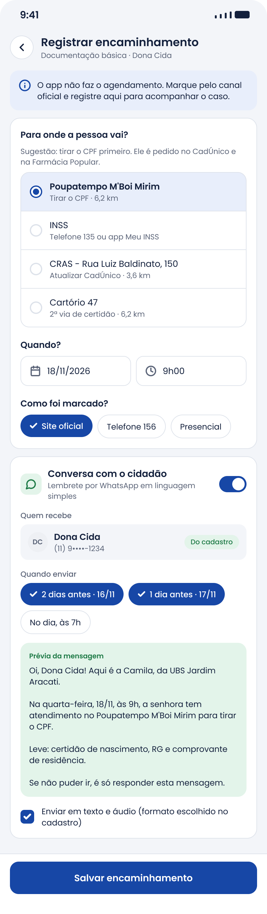
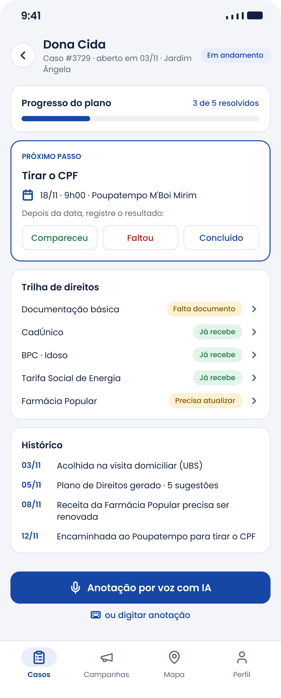
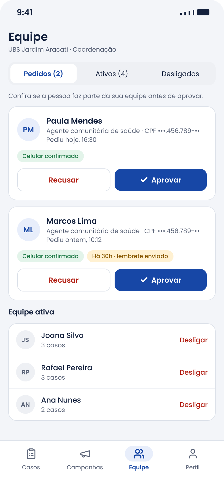

Você leva o direito até a porta.
O Caminho dos Direitos ajuda agentes de saúde e assistentes sociais a descobrir, na própria visita, quais benefícios e documentos cada pessoa precisa, e mostra para a gestão onde agir primeiro em São Paulo.


Projeto acadêmicoDesenvolvido para a Global Solution 2026 da FIAP.



Tudo o que o agente precisa na palma da mão
Do primeiro contato até o atendimento, o caso fica registrado e acompanhado.
- Plano de direitos gerado na visita
- Encaminhamento com lembrete no WhatsApp, em texto ou áudio
- Anotação por voz organizada por IA
- Acesso com CPF e PIN, aprovado pelo coordenador
- Acompanhamento dos casos da unidade
- Dados que alimentam o dashboard por subprefeitura
O direito existe. O que falta, muitas vezes, é o caminho até ele.
Quem mais precisa de um benefício costuma ser quem tem mais dificuldade de chegar até ele.Por que tanta gente fica de fora?
Pessoas em situação de vulnerabilidade têm direito a benefícios, mas travam em barreiras pequenas que se acumulam.
Quem já bate na porta leva o direito junto
Agentes de saúde e assistentes sociais já visitam as famílias. O app transforma essa visita em um plano de ação.
Na visita
- O agente preenche um formulário curto com a pessoa.
- A renda é calculada por pessoa da casa, sem constranger.
- Anotações podem ser ditadas e a IA organiza.
Plano e encaminhamento
- O app sugere os benefícios possíveis e as pendências de cada um.
- O agente encaminha a pessoa ao serviço certo.
- Lembrete no WhatsApp em texto ou áudio, com dia, local e documentos.
Monitoramento
- Os dados viram um dashboard por subprefeitura.
- A gestão vê onde há mais pessoas sem documento ou benefício.
- Um modelo indica quais distritos priorizar em campanhas.
Onde agir primeiro, em um só painel
O painel cruza dados públicos do território com os dados que o app gera, para orientar campanhas e equipes.
Dados de território reais e públicos. Os dados de uso do app são simulados, porque o app ainda é um protótipo. A versão em Power BI está no arquivo .pbix.
A jornada da Dona Cida
Um caso da nossa base acompanhado do primeiro contato até o atendimento.
A visita
A agente da UBS preenche o formulário com a Dona Cida, na casa dela.
O plano
O app mostra que, para seguir com os benefícios, ela precisa tirar o CPF e o título de eleitor.
O encaminhamento
A agente agenda o atendimento no Poupatempo e registra no caso.
O lembrete
Ela recebe no WhatsApp, em texto e áudio, o dia, o local e o que levar.
Um app, três olhares
Cada pessoa da rede vê o que precisa para tomar a próxima decisão.
Agente de campo
Agentes de saúde e assistentes sociais
- Entra com CPF e PIN, sem gov.br
- Cria o plano de direitos na visita
- Registra encaminhamentos e resultados
- Faz anotações por voz com IA
Coordenador
Responsável pela UBS ou pelo CRAS
- Aprova os pedidos de acesso da equipe
- Acompanha todos os casos da unidade
- Transfere casos quando um agente sai
- Confirma indicações para campanhas
Gestão
Por subprefeitura
- Vê só os dados da sua subprefeitura
- Identifica distritos prioritários
- Planeja campanhas e mutirões
- Acompanha a efetividade dos lembretes
Conheça as telas do app
Arraste para o lado para ver as principais telas ou navegue pelo protótipo completo logo abaixo.
← arraste →



assets/telas/dona-cida.png
assets/telas/equipe.png'">Perguntas frequentes
O app já está funcionando?
Ainda não. O app é um protótipo navegável feito no Figma, para validar a ideia e a experiência dos agentes. O dashboard e o modelo de prioridade já funcionam com dados públicos reais.
Os dados do dashboard são reais?
Os dados de território são públicos e reais (CadÚnico, IBGE, CNES, GeoSampa, entre outros). Os dados de uso do app, como casos e encaminhamentos, são simulados para mostrar como o painel funcionaria com o app em uso. O painel indica a origem de cada número.
Por que o app não usa login do gov.br?
Muitos agentes têm dificuldade com o gov.br. O acesso é feito com CPF, unidade de trabalho e um PIN, e o coordenador da UBS ou do CRAS aprova o pedido.
Como funcionam os lembretes no WhatsApp?
Depois do encaminhamento, a pessoa recebe no número cadastrado (dela ou de um familiar) o dia, o horário, o local e os documentos que precisa levar, em texto, em áudio ou nos dois formatos.
O que o modelo de prioridade faz?
Ele estima, por distrito, onde há mais pessoas com direito a benefícios que ainda não recebem, e recomenda campanhas apenas para os distritos de prioridade urgente ou alta.
Veja o Caminho dos Direitos em poucos minutos
A apresentação do problema, da solução e do impacto que o projeto pode gerar.
em breve
Dados e modelo
Todo o tratamento foi feito em Python, com o código aberto neste repositório.
Tratamento dos dados
Limpeza e união das bases públicas por distrito e subprefeitura de São Paulo.
VER NOTEBOOK →Modelo de prioridade
Estima onde estão os direitos não acessados e recomenda campanhas por distrito.
VER NOTEBOOK →Snowflake + Galaxy
O modelo dimensional (constelação de fatos) que liga o app, os dados públicos e o dashboard.
VER MODELAGEM →Quem fez
Angelo Rabello
Apresentação e site
RM 564338
Karen Akemi
Dados e dashboard
RM 562733
Milena Barbosa
Protótipo do app
RM 558913